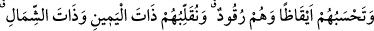

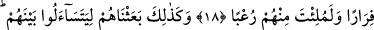
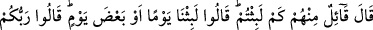
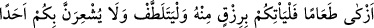
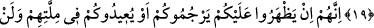
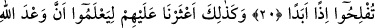
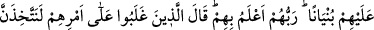
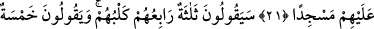
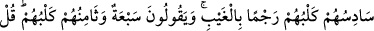
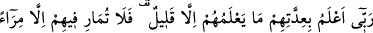
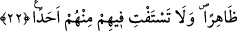
ASHÂB-I KEHF HAKKINDA
18. Kendileri uykuda oldukları halde sen onları uyanık sanırdın. Onları sağa sola
çevirirdik. Köpekleri de mağaranın girişinde ön ayaklarını uzatmış yatmakta idi.
Eğer onların durumlarına muttali olsa idin dönüp onlardan kaçardın ve gördüklerin
yüzünden için korku ile dolardı.
19. Böylece biz, aralarında birbirlerine sormaları için onları uyandırdık:
İçlerinden biri: “Ne kadar kaldınız?” dedi. (Kimi) “Bir gün ya da günün bir parçası
kadar kaldık” dediler; (kimi de) şöyle dediler: “Rabbiniz, kaldığınız müddeti daha
iyi bilir. Şimdi siz, içinizden birini şu gümüş paranızla şehre gönderin de, baksın,
(şehrin) hangi yiyeceği daha temiz ise size ondan erzak getirsin; ayrıca, nâzik
davransın (gizli hareket etsin) ve sakın sizi kimseye sezdirmesin.”
20. “Çünkü onlar eğer size muttali olurlarsa, ya sizi taşlayarak öldürürler veya
kendi dinlerine çevirirler ki, o zaman ebediyyen iflah olmazsınız.”
21. Böylece (insanları) onlardan haberdar ettik ki, Allah’ın vaadinin hak
olduğunu, kıyâmetin şüphe götürmez olduğunu bilsinler. Hani onlar aralarında